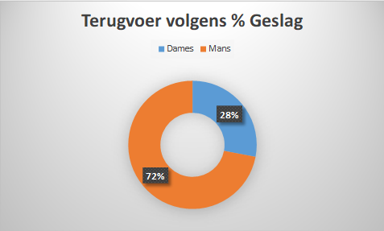
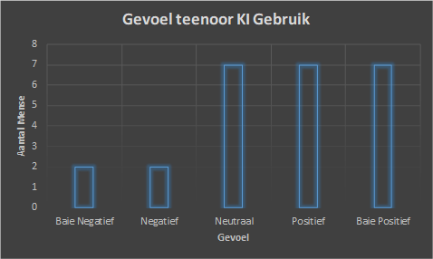

Bevindings
Grafieke

Aanbeveling: Gevallestudie moet uit eweveel dames en mans bestaan.
Bevinding: Die grafiek dui die persentasie geslag (dames en mans) wat die vorm beantwoord het aan.

Aanbeveling:Die gevallestudie moet 'n groter hoeveelheid mense insluit.
Bevinding:Die grafiek toon die mense se gevoel teenoor die gebruik van KI-instrumente aan.

Aanbeveling:xxxx
Bevinding:xxx
Bibliografie
- Adendorff, H. J.-S. (2024). KI-geletterheid is 'n kritieke komponent van leer in die 21ste eeu. Universiteit van Stellenbosch, 1-3.
- Esterhuizen, Z. (2024, Junie 10). Kunsmatige intelligensie. Retrieved from www.weet.co.za: https://weet.co.za/wetenskap-en-geografie/kunsmatige-intelligensie/
- O'Reilly, S. S. (2025, Januarie 24). Die rol van onderwysers in die era van kunsmatige intelligensie (KI). Retrieved from www.akademia.ac.za: https://akademia.ac.za/onderwysers-en-kunsmatige-intelligensie/